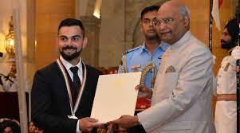
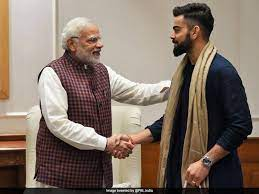
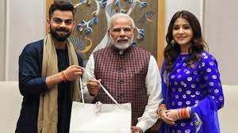
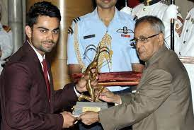

Virat Kohli was born on 5 NOvember 1988 in Delhi into a Punjabi Hindu Family.His Father,Prem Kohli,worked as a criminal Lawyer and his mother saroj Kohli served as house wife.He has an elder brother Vikas,and an older sister Bhawna.Kohli's formative years were spent in the Uttam Nagar and Commenced his change education at Vishal Bharathi Public School.According to his family Kohli exhibited an change affinity for cricket bat,display natural skill, request his father to bowl him. In 1998 west Delhi cricket Academy was created and on 30 May of that year ,his father espoused him fervour for cricket. Kohli persistent and eventually found his way into the under 15 Delhi Team. Kohli's ardent passion for cricket compelled him to travel long distances with his father to ensure that he never missed a match.
On 18 December 2006, Kohli experienced the loss of his father due to a cerebral attack. During his childhood, his father played a crucial role in supporting his cricket training. Kohli has credited his father as the one who drove him to practice every day. He has expressed his feelings of missing his father's presence at times.Following the demise of Kohli's father, his other observed a significant change in his personality. Kohli appeared to become more mature overnight, and he began taking every ricket match seriously. He harboured an aversion to exclusion from games and appeared to channel his entire existence into the pursuit of cricket following his father's untimely demise.Kohli's family resided in Meera Bagh, Paschim Vihar until the year 2015, after which they relocated to Gurgaon.
Kohli's junior cricket career kicked off in October 2002 at the Luhnu cricket ground in a Polly Umrigar match against the host state of Himachal Pradesh. In his debut match, Kohli managed to score a total of fifteen runs. His first half-century in national cricket came at Ferozeshah Kotla, where he scored 70 runs against Harayana. By the end of the season, Kohli had amassed a total of 172 runs, emerging as the highest run-scorer for his side with an average of 34.40.During the 2003–04 season, Kohli was appointed as the captain of the under-15 team. In his first match of the season, he scored 54 runs in Delhi's victory over Himachal Pradesh. In the next fixture against Jammu and Kashmir, Kohli scored his maiden century with a score of 119 in a BCCI-conducted game. By the end of the season, he had amassed a total of 390 runs at an average of 78, which included two centuries.Towards the end of 2004, Kohli earned selection for the 2004–05 Vijay Merchant Trophy with the Delhi under-17 team.
On 18 February 2006, Kohli made his debut in List A cricket, playing against Services in the Ranji One-Day Trophy, but he did not have the opportunity to bat during the match. In 2006, Kohli had garnered enough attention to earn a spot in the state senior team. Subsequently, he made his first-class debut on 23 November 2006, during the opening match of the Ranji Trophy season against Tamil Nadu. However, his debut innings was a brief one, as he was dismissed after scoring ten runs. In a sequence of three matches, Kohli failed to score a fifty, leading his coaches to provide him with counselling. In the subsequent match against former champions, Karnataka, Delhi found themselves trailing with a score of 130/5, with Kohli remaining unbeaten on 40 at the end of the day's play. That very night, Kohli's father passed away at 3:54 a.m. Despite the heart-wrenching news, Kohli returned to the match and continued to bat and scored 90 runs before he was dismissed.The team's coach, Chetan Chauhan was impressed by Kohli's resolute determination and unwavering attitude in the face of adversity.
In August 2008, Kohli was selected for inclusion in the ODl squad for the tour of Sri Lanka and the Champions Trophy in Pakistan. Prior to the Sri Lankan tour, Kohli had limited experience, with only eight List A matches under his belt.[45] So, his selection was considered a "surprise call-up". During the Sri Lankan tour, as both first-choice openers Sachin Tendulkar and Virender Sehwag, were unable to play due to injury, Kohli was required to fill the role of makeshift opener throughout t he series. On 18 August 2008, Kohli made his international debut at the age of 19 in the first ODI of the tour, where he was dismissed for 12 runs, caught dead in front by an incutter from Nuwan Kulasekara. However, in the fourth match of the series, Kohli achieved his inaugural half century in the ODl format, with a total of fifty-four runs scored.
In January 2010, Kohli was given the opportunity in tri-nation ODI tournament in Bangladesh, as Tendulkar was rested for the event.During the series, Kohli became just the third Indian player to score two ODI centuries before the age of 22.He was widely hailed for his performances, and ultimately emerged as the leading run-scorer of the series, with 275 runs from five innings at an impressive average of 91.66.Kohli's success on the field belies the stereotype of him as a brash and arrogant player. In fact, Indian captain MS Dhoni has noted that "he has grabbed his chances" and that "he has matured now." Dhoni went on to say that "To us, he comes as a 'humble guy'. He might come across different to the world.
Kohli was appointed the vice-captain for the 2012 Asia Cup in Bangladesh on the back of his fine performances in Australia. Kohli was in fine form during the tournament, finishing as the leading run-scorer with 357 runs at an average of 119.In the final group stage match against Pakistan, he scored his personal best of 183 from 148 balls, his 11th ODI century. He helped India to chase down 330, their highest successful ODI run chase at the time.His knock was the highest individual score in Asia Cup history surpassing previous record of 144 by Younis Khan in 2004 and the joint second highest score along with Dhoni in an ODI run-chase; also became the highest individual score against Pakistan in ODIs.Kohli was awarded the man of the match in both the matches that India won,nonetheless India could not progress to the final of the tournament.[
Kohli had a successful time during India's home ODI series win over the West Indies in October 2014. His 62 in the second ODI at Delhi was his first fifty across Tests and ODIs in 16 innings since February and he stated that he got his "confidence back" with the innings.Dhoni was rested for the five-match ODI series against Sri Lanka in November enabling Kohli to lead the team for another full series.. In the fifth ODI at Ranchi, he made an unbeaten 139 off 126 balls to give his team a three-wicket win and a whitewash of Sri Lanka.Kohli was awarded player of the series and it was the second whitewash under his captaincy.
Playing his first Test in the West Indies since his debut series, Kohli scored 200 in the first Test at Antigua to ensure an innings-and-92-run win for India, their biggest win ever outside of Asia. It was his first double hundred in first-class cricket and the first made away from home by an Indian captain in Tests.India went on to wrap the series 2–0 and briefly top the ICC Test Rankings before being displaced by Pakistan at the position. He scored another double hundred, 211 at Indore in the third Test against New Zealand as India's 3–0 whitewash victory saw them regain the top position in the ICC Test Rankings.
In January 2010, Kohli was given the opportunity in tri-nation ODI tournament in Bangladesh, as Tendulkar was rested for the event.[65] During the series, Kohli became just the third Indian player to score two ODI centuries before the age of 22.[66] He was widely hailed for his performances, and ultimately emerged as the leading run-scorer of the series, with 275 runs from five innings at an impressive average of 91.66.[67] Kohli's success on the field belies the stereotype of him as a brash and arrogant player. In fact, Indian captain MS Dhoni has noted that "he has grabbed his chances" and that "he has matured now." Dhoni went on to say that "To us, he comes as a 'humble guy'. He might come across different to the world.
In April 2019, he was named the captain of India's squad for the 2019 Cricket World Cup.On 16 June 2019, in India's match against Pakistan, Kohli became the fastest batsman in terms of innings to score 11,000 runs in ODI cricket. He reached the landmark in his 222nd innings.Eleven days later in the match against the West Indies, Kohli became the fastest cricketer in terms of innings to score 20,000 runs in international cricket, doing so in his 417th innings.Kohli scored five consecutive fifty plus scores in the tournament. Nonetheless, India lost the semi-final against New Zealand in which Kohli was out for just a run.After the World Cup, India toured West Indies for 3 T20Is and 3 ODIs followed by two test matches .Kohli was instrumental in ODI series win as he struck back to back hundreds in second and third ODI. He was awarded player of the series for his match performances.
In September 2021, Kohli was named as the captain of India's squad for the 2021 ICC Men's T20 World Cup. However, Kohli also publicly announced his decision to step down from the role of T20I captain following the tournament's conclusion.[279] India was unable to advance to the semi-final round, marking the first time in a period of 9 years that India had been excluded from the tournament's latter stages. In December 2021, Kohli was replaced by Rohit Sharma as India's ODI captain. The BCCI President, Sourav Ganguly, disclosed that Kohli's removal from the ODI captaincy was attributed to the selectors decision to avoid having two leaders for the white ball format. However, he also conveyed that Kohli was asked to remain the captain of the T20I
In the early part of the year, Kohli began his campaign with a century against the touring Sri Lankan side in ODI.[304] In the third match of the series, Kohli delivered a prodigious performance, amassing an unbeaten 166 runs from 110 balls. This century, his 21st in India, marked a milestone as he surpassed all other players for the most ODI centuries scored in the country. Additionally, his performance in this match elevated him to become the fifth highest run-scorer in ODI cricket, going ahead of Mahela Jayawardene. Following Kohli's performance, India went on to win the third ODI match by a record margin of 317 runs. In February–March 2023, Kohli played in the Border-Gavaskar series of 2023.
Kohli's romantic association with Bollywood actress Anushka Sharma, which commenced in 2013, earned the duo the moniker of "Virushka".During an interview with Graham Bensinger, Kohli divulged that he had encountered Sharma for the first time, when they were both were engaged in a promotional shoot for Clear shampoo.Their union since then has attracted significant media interest, with persistent rumours and speculations swirling around in the press, as both parties remained reticent about publicly discussing the relationship.On 11 December 2017, the couple exchanged nuptials in an intimate ceremony held in Florence, Italy, becoming one of the most talked-about celebrity couples in the country.On 11 January 2021, the couple had their first child, a daughter, who was named Vamika.The child's name, Vamika, is derived from Sanskrit, meaning "little goddess".
2013 – Arjuna Award, second highest sporting honour.
2017 – Padma Shri , India's fourth highest civilian award.
2018 – Major Dhyan Chand Khel Ratna Award, India's highest sporting honour.
   